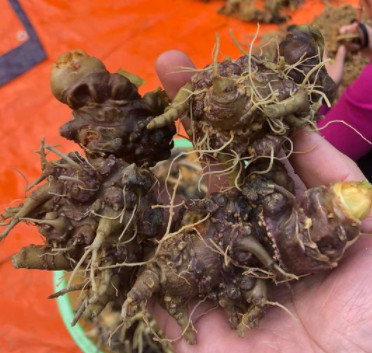

CỦ TAM THẤT - TÁC DỤNG CỦA CỦ TAM THẤT¶
Củ Tam Thất Có Tác Dụng Gì¶
CỦ TAM THẤT NGÂM RƯỢU¶
CÁCH SỬ DỤNG CỦ TAM THẤT¶
- CÁCH DÙNG CỦ TAM THẤT
- Củ tam thất ngâm mật ong
- Tác dụng của củ tam thất ngâm mật ong
- Cách ngâm củ tam thất với mật ong
- Tam thất ngâm rượu
- Tam thất ngâm rượu có tác dụng
- Củ tam thất nghiền thành bột
- Củ tam thất dùng khô
- Củ tam thất dùng tươi
- Món gà tần hầm củ tam thất
- Món tim hầm củ tam thất
- Món cá kho
- Thịt hấp mật ong tam thất
CỦ TAM THẤT CÓ MẤY LOẠI¶
- Tìm Hiểu Củ Tam Thất Có Mấy Loại Và Loại Nào Tốt Nhất?
- Công dụng đặc biệt của củ tam thất
- Củ tam thất có mấy loại?
- Củ tam thất bắc
- Củ tam thất nam
- Củ tam thất hoang (rừng)
- Củ tam thất loại nào tốt nhất?
- Giá các loại tam thất hiện nay
- Cách dùng các loại tam thất hiệu quả
- Cách sử dụng tam thất rừng
- Cách sử dụng tam thất bắc
- Cách sử dụng tam thất nam
- Video: Tam thất ngâm mật ong
- Các bài viết khác có thể bạn chưa xem
Note
Liên hệ Thảo mộc HHT - Điện thoại: 0964.421.551 hoặc 0932.340.345 Địa chỉ: Nhà 23a, Ngõ 137 đường Bát Khối, phường Long Biên, quận Long Biên, Hà Nội Điện thoại: 0932 340 345
.jpg)